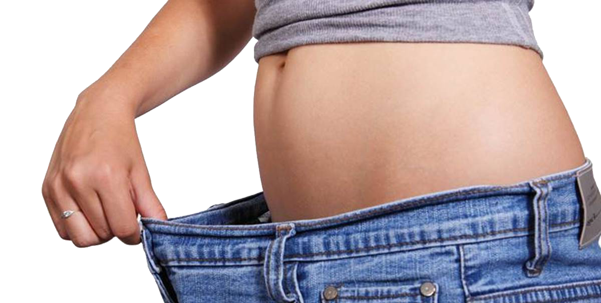

Calculate Your Body Mass Index
Height (in cm)
Weight (in kg)
Body Mass Index (BMI)
BMI is an indicator of the amount of body fat for most people. It is used as a screening tool to identify whether an adult is at a healthy weight. Find your BMI and what it means with our handy BMI Calculator. A separate BMI Percentile Calculator should be used for children and teens that takes a child’s age and gender into consideration.
- BMI stands for Body Mass Index.
This is a numerical value of your weight in relation to your height. A BMI between 18.5 and 25 kg/m² indicates a normal weight. A BMI of less than 18.5 kg/m² is considered underweight. A BMI between 25 kg/m² and 29.9 kg/m² is considered overweight. A BMI of 30 kg/m² or higher is considered obese. - Excess weight increases the heart's work.
It also raises blood pressure and blood cholesterol and triglyceride levels and lowers HDL (good) cholesterol levels. It can make diabetes more likely to develop, too. Lifestyle changes that help you maintain a 3-5% weight loss are likely to result in clinically meaningful improvements in blood glucose, triglycerides, and risk of developing type 2 diabetes. Greater weight loss can even help reduce BP and improve blood cholesterol.
Your body is made up of water, fat, protein, carbohydrate and various vitamins and minerals. If you have too much fat — especially if a lot of it is at your waist — you're at higher risk for such health problems as high blood pressure, high blood cholesterol and diabetes. That increases your risk for heart diseases and stroke.
Obesity is now recognized as a major, independent risk factor for heart disease. If you're overweight or obese, you can reduce your risk for heart disease by successfully losing weight and keeping it off.
Waist circumference and body mass index (BMI) are indirect ways to assess your body composition. Waist-to-hip ratio (WHR) is another index of body fat distribution. However, WHR is less accurate than BMI or waist circumference and is no longer recommended.

Cooking For Weight Loss
There's usually no single cause for being overweight or obese, and there’s no single solution either. But there are some simple steps you can take that will gradually shed pounds in a healthy way. (Hint: To weigh less, cook more!) Home cooking puts you in control of what goes into your food and your body.
Here are some guidelines to get you into the kitchen and cooking healthy!
- Put vegetables at the top of your shopping list and plan your meals around them instead of what kind of meat you’re going to prepare. Formula: more veggies; less meat. Beans are a vegetable, so have tacos with beans instead of hamburger, and add plenty of freshly chopped salsa, tomatoes and lettuce. The same goes for your lunch. Make sandwiches with less meat, and pile on the veggies. Go beyond lettuce and tomato! Add cucumbers, sprouts, spinach and sweet bell pepper strips. Hold the mayo, or use the low-fat or fat-free kind.
- Skip the sugary stuff. Sugar has calories, but no other nutritional value. Some sugar occurs naturally in fruits, vegetables, milk and grains. One culprit in undermining weight loss is often “added sugar”—the kind added to food and drinks during processing, as well as the obvious sugar bowl on the table. If you’re cooking at home, you probably won’t be adding sugar to your minestrone soup, but manufacturers might. Rethink your drink.
- Eat it all. You read that right, for wheat that is. Choose breads, crackers and cereals made from whole grains, which contain all the parts of the grain. Refined grains are stripped of their healthy outer coat (bran), which lowers some of the nutrients in the grain. And eating whole food fills you up, not out—a real boon for your weight loss efforts. Brown rice is a whole grain; white rice is not. Similarly, removing the skin from fruits and vegetables decreases their fiber content. It’s better to eat an apple than to drink apple juice.